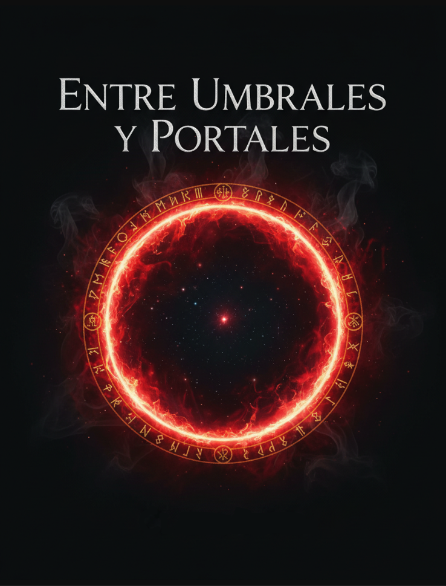

Entre Umbrales y Portales
Hay puertas que no deberían abrirse.
Y mundos que jamás deberían cruzarse.

¡Bienvenidos! Mi nombre es Ricardo Blanco Sánchez y os presento mi primer gran proyecto literario.
Lo que comenzó hace once meses como una idea compartida y un divertido reto entre amigos, ha terminado convirtiéndose en una novela de fantasía y acción a la que le he dedicado todo mi esfuerzo, constancia e ilusión para darle el cierre que se merecía. Hoy, por fin, puedo compartir esta obra con todos vosotros de manera totalmente gratuita.
Espero de corazón que disfrutéis leyendo este libro tanto como yo he disfrutado dándole vida. ¡El portal ya está abierto!
¿De que trata el libro?
En esta obra, nos adentramos en la historia tras la llegada de una letal raza alienígena conocida como los Umbrales, seres aterradores cuyo único objetivo es exterminar a la raza humana.
Tras su caótico desembarco en la Tierra, algunos humanos comenzaron a manifestar habilidades extraordinarias. El origen de este poder reside en la combinación de una misteriosa radiación emanada por estos monstruos y un fuerte detonante emocional: un trauma profundo enlazado directamente con estas criaturas.
Estos humanos, ahora dotados de capacidades sobrehumanas, se autodenominaron Cazadores de Umbrales. Su deber no solo será proteger los restos de la humanidad, sino adentrarse en lo desconocido para descubrir la oscura verdad sobre los Umbrales y su verdadero origen.
¿Por qué debería interesarme?
Esta es una historia repleta de acción frenética, suspense y una gran variedad de personajes con los que empatizarás desde el primer momento. Mi objetivo principal al escribirla ha sido lograr que te sientas completamente inmerso en ella, describiendo cada escenario de forma tan visual y detallada que te resultará sumamente fácil imaginarlos.
Si decides adentrarte en este universo, te aseguro que no te arrepentirás. A lo largo de la lectura experimentarás emociones fuertes, pero también te reirás con el humor y las bromas de nuestros carismáticos protagonistas. No habrá espacio para el aburrimiento: la trama avanza sin descanso, revelando un misterio tras otro sobre la existencia de la raza Umbral y la verdadera razón de su conquista.
¿Qué puedo hacer aquí?
En esta web, que he desarrollado desde cero, podrás explorar una galería completa de nuestros personajes con sus nombres, detalles y descripciones. He diseñado este espacio pensado especialmente para que vosotros, los lectores, tengáis un primer vistazo tanto de nuestros queridos comandantes como de los temibles Umbrales.
En las fichas individuales de la galería, también podréis consultar sus habilidades, capacidades y las apariencias conceptuales que sirvieron de inspiración para darles vida en la obra. Puedes utilizar esta web como una "wiki" interactiva para consultar datos sobre los personajes mientras avanzas en la lectura del libro.
Si tienes curiosidad por empezar a investigarlos, pulsa los botones que encontrarás justo aquí abajo, o dirígete a la barra de navegación para explorar los diferentes apartados. ¡Disfruta del viaje!